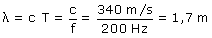
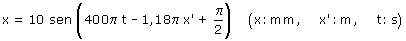

b)  Por capricho vamos a obtener la ecuación de onda Parámetros de la onda:
La fase inicial del foco se añade directamente a la fase espacio-temporal de la onda, resultando:  La onda es longitudinal: se propaga a lo largo del eje horizontal en sentido creciente y cuando llega a un punto de coordenada x' este comienza a oscilar horizontalmente modificando su posición en x respecto a su posición de equilibrio, es decir su posición es: x' + x |